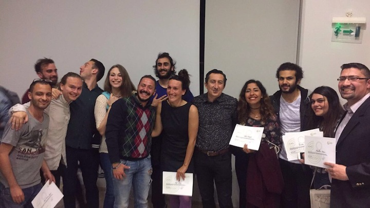

The Intensive Documentary Weekend Workshop in Documentary Filmmaking is a hands-on guide to shooting and editing a documentary film. In this powerful and information-packed workshop, Eva Stotz will introduce students to the documentary medium, guiding them through the process of researching, shooting and editing. During the weekend participants will do practical exercises, in which they go out and shoot footage and then edit it, and homework assignments.
This course is suitable for intermediate levels. Needed is availability and basic knowledge of a Camera or Camera option on phone as well as availability and basic knowledge of editing software.
» When registering for the class I wasn’t sure whether this would work: Shoot and edit a documentary short in the class and at night. But Eva just knows how to guide people to very close to their full potential. Eva, you really made us create things and go beyond what we thought we could do. Thank you for this. «
Heiner Schäfer, Automn 2015